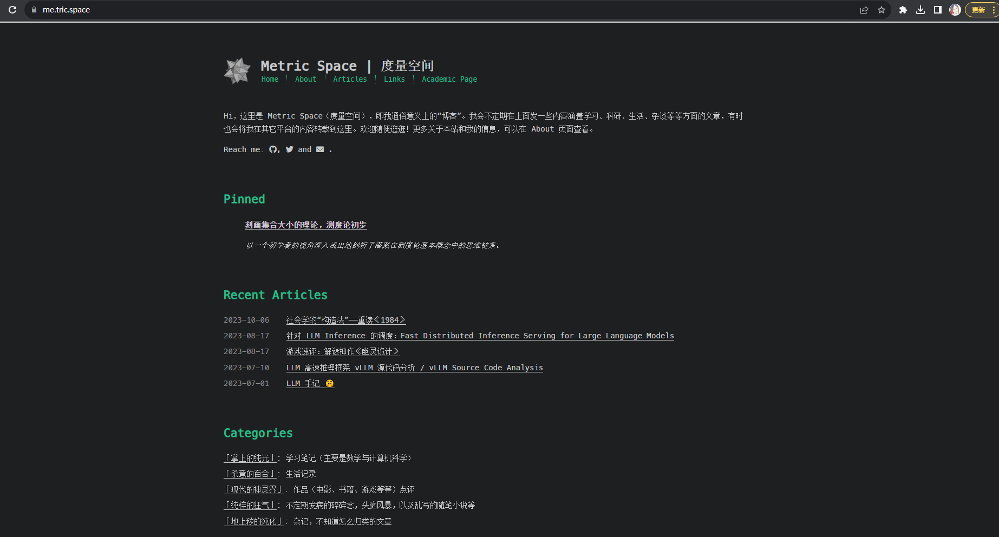
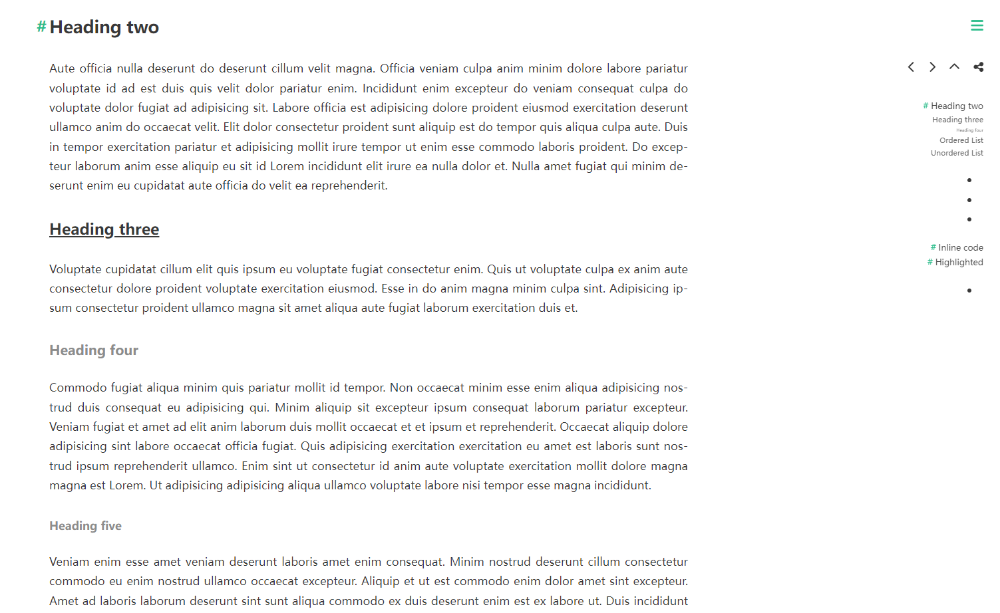

前言
今天本来要更新一篇叫《忆思源街》的文章，内容看标题就可以知道了（思源街是交大的一条街，最近要拆掉了）。不过由于一些原因，文章写了一半还没完工，并且现在不是很想继续写下去，抒情、回忆这种事情断了情绪、感觉，就很难再续上去了。
又很巧的是，最近感觉博客用的宋体（是因为我用的 Cactus Theme 的 font family 没有包含中文字体）不好看了，以及也有朋友和我反映过一些阅读上的问题，于是打算小小装修一下博客。因此随手写了这篇关于装修博客的文章，以及把我的一些胡思乱想倒在这里（这也是为什么分这个类）。
装修博客
字体方面，我在 Cactus Theme 官方 Repo 的 Issue 区找到了一些有用的 Issues：
- 关于怎么换字体：https://github.com/probberechts/hexo-theme-cactus/issues/335
- 关于怎么改 H2/H3 等 Element 的样式：https://github.com/probberechts/hexo-theme-cactus/issues/213
以及通过 F12 加上在 CSS 文件夹里搜索各种字段，大概是摸清了在哪里改各种东西，于是就开工。
首先是第一个问题：用黑色还是白色？之前的博客页面长这样：

是黑+绿的搭配，颇有极客风范。但是这样读起来有些吃力，可能是因为黑底白字读起来还是没有白底黑字舒服吧。于是打算换成白色。当然绿色没有动，这是因为我的 Logo 也是绿色的，而且感觉换其他颜色也不太好看。

其次是字体字号，我选择了微软雅黑作为中文字体，Arial 作为英文字体，并且正文的字号规定为 17px。经测试，在 PC 端 1080P 屏幕阅读体验还是很舒适的。此外对其他元素我也做出了一些改动，比如文章标题字号改为 48px，h2 改为 1.5rem，h3 改为 20px 等。


在调整时，我参考了stdrc 的博客，个人感觉他的博客整体看起来还是很整洁清爽的，白底黑字，也没有多余的装潢。
最后的效果可以查看这个 Markdown 测试界面，上面两张图就是从这截的。
博客定位
其实很容易发现，虽然说大家都叫博客 / Blog，但是很多时候定位还是比较不同的。比如我的学长 陈乐群的博客，以及很多北美 PhD 的博客，他们更像是一种学术博客，记载的内容大多为一些学术研究内容、实习经历等。像 LMSYS 这种 Blog 就更不用说了，完全是学术 Blog。之前和一个同学聊过，说现在的学术圈已经开始流行先发博客、Twitter 宣传，然后再出 Paper 的模式了（尤其是 ML 圈，系统、TCS 好像没这个现象）。这类 Blog 往往写的十分正式，行文条理清晰，并且很可能有图、有数据等硬核内容，在学术写作的时候甚至都可以直接引用。
还有一类其实是高中搞信息竞赛（OI）时期的人特有的，不妨称之为做题博客。特点就是往往记录的都是自己在各大 OJ 刷题的感受、题解等，为的是整理做过的题，总结提升。这类博客往往出没在博客园、CSDN 中，并且往往二次元浓度很高。博主在搞 OI 的时期也有过一个 CSDN 账号：SiriusNEO，当然作为一个菜鸡，我也没有刷很多题，上面的记录也不是很多。
以及还有一种技术博客，它和第一种”学术博客”其实很像，往往有时会同时出在一个人的博客中。不同的是技术博客往往分享的并不是学术方面的内容，而是一些偏工程性的内容，比如分享自己怎样解决某个 Bug，又或者怎样能够骗 ChatGPT 说出它的 System Prompt 等。
对于非数学、计算机专业的人来说，他们的博客可能更加生活化、文学化，记录的是自己平常的所见所闻。（当然，这里不排除别的专业的人用博客来记录自己的学术内容，只是比较少见）对于他们来说，博客里可能是去哪里玩的游记，分享自己生活中遇到了一件什么事，然后怎么处理的之类的。
讲了这么多，其实都在铺垫一个问题：我的这个博客 “度量空间”，它又该是什么定位呢？按这个名字，它似乎需要是一个学术博客。但是对于我个人而言，我希望将它做成一个混合式的、什么都放的地方，就像 Bojie Li 学长的博客 那样。反正说到底，只要是 Markdown 格式的都可以挂在 Articles 下，可能只是别人浏览起来会有些别扭了。不过偏学术性的内容我也会转载到知乎，这一点到不用担心。并且我还有一个 “Pin” 的功能，可以把想让别人优先看到的文章放在那里。
文章质量
可能你逛完我的博客，会感觉我的博客文章不仅在内容上是混杂的，在质量（写作认真程度上）也是鱼龙混杂的。比如这篇 记又一次 Touhou 群小聚，全文基本没有几个字，只是和群友出去玩的照片。也有写的非常认真的，比如概率论的学习笔记和计算机网络的那篇翻译，都是我花了至少3天的工时才写成的。
关于这一点，其实也是没办法的。刚刚提到的第一篇那个 “水文”，是我在刚搭好博客后不久写的，那时候还处在三分钟热度的状态，稍微有点风吹草动就往上面搬。不过我也不打算删掉了，就让它留在那里吧，也算是某种历史痕迹了。至于文章质量？写个博客还管这质量那质量的，那压力也太大了吧。
不过有一点确实需要以后改进一下，就是目前来说，这个博客太 “技术” 了，计算机味道太冲了。很大一部分文章都是学术、技术类文章。之后我也会增加一些小散文之类的，还是要增加一些人文因素嘛。
强迫症与完美主义
如前所言，这篇文章逐渐过渡到胡思乱想环节了。在不断装修博客的过程中，我又一次被自己的 “完美主义症” 给烦到了。我发现我在干类似的事情（修改网页，做 PPT，写代码）的过程中总是无法忍受一些小毛病，比如某个地方没对齐等。又或是为了一个字体大小、变量名、规范思考半天，迟迟下不了决定。
这已经不是我第一天意识到我自己有点这样的强迫症倾向了。之前我应该提到过我有一个学术主页，对于它，我也是改了又改，仿佛怎么改都不满意。我想很大一个因素是，在做每个行为之前，我都会下意识地去权衡它的利弊：比如在设计的时候，我会去想方式 A 相比于方式 B，有哪些优势、劣势，最后我应该采用哪种。在有些场合，这种决策当然是必须的；但是如果事事都这么干的话，就会很累。我的实验进度也很大程度上被这种心理拖慢了。我很早以前就看到过一个说法：
There is no silver bullet in designing and architecting
我也把这个说法当作我写代码、或是进行更广义上的艺术创作的一种准则，不然的话，我想我会浪费大量的时间去思考这个 Silver Bullet 在哪。但是，直到今天，我还是感觉这种强迫症依然伴随着我。
那么怎么样才能治好它呢？我不知道，但是我现在感觉，只要能分清主次轻重，就能一定程度上改善这个问题。比如我对事件 A 的权重很高，那么相应地，多纠结一点也无所谓；但是如果这个事情权重很低，那么就随意了。不过 “能分清” 这个能力（也就是赋权重的能力）说容易，也不是很容易。我也不知道能不能改正它，也许它已经是我性格的一部分了呢。但是我会试图去抵抗它的。断臂的维纳斯才是艺术。
今后如果我意识到了我陷于某种无意义的纠结，我会用这段话提醒自己这件事是否值得纠结。我称之为 “维纳斯检验”。
以及永远记住：有的东西之后也可以修改（iterate，迭代），并不用现在就做的尽善尽美。